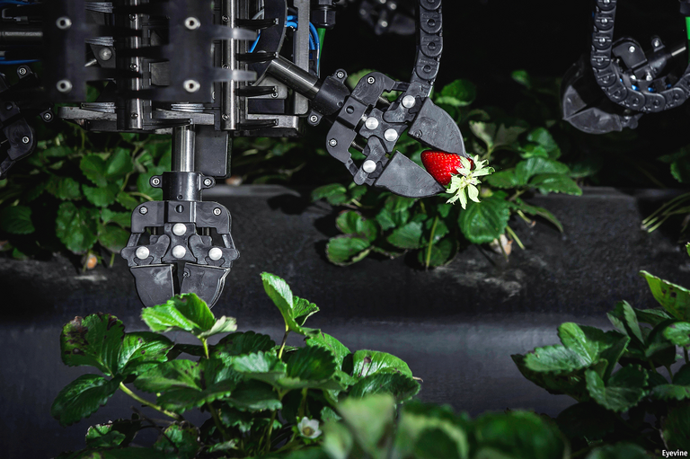
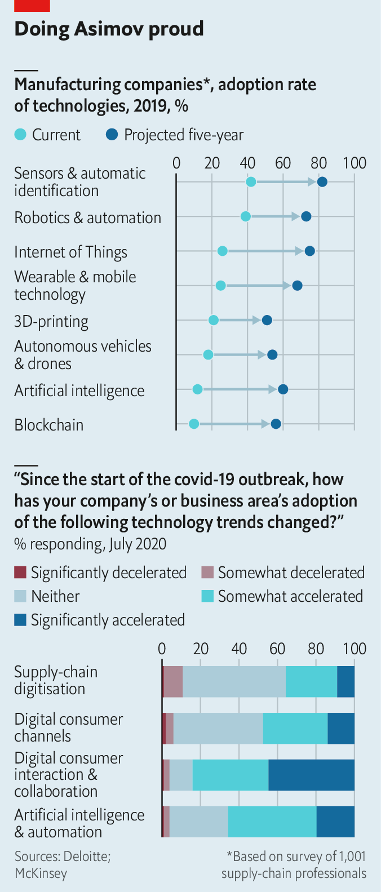
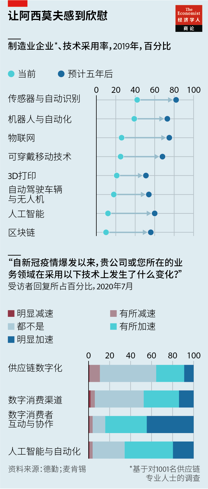
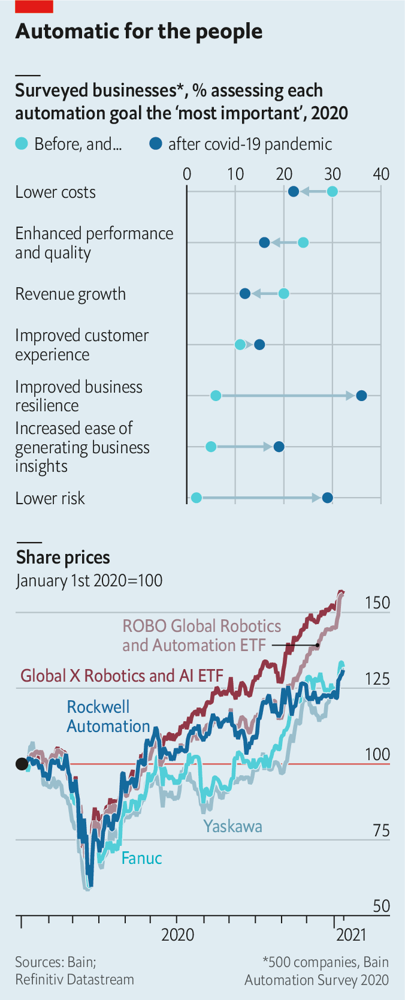
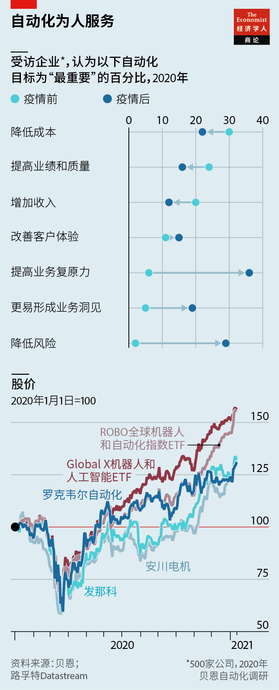

Text
2021-01-24T15:20:08+00:00
Business and technology
商业与技术
商業與技術
Bearing fruit
拾取果实
拾取果實
The pandemic has ushered more robots into factories, warehouses and back offices. They are here to stay
疫情把更多机器人请进了工厂、仓库和后台办公室。它们会留下来
疫情把更多機器人請進了工廠、倉庫和後台辦公室。它們會留下來

MARY BARRA, boss of GM, took to the virtual stage on January 12th to launch BrightDrop. The carmaker’s new logistics division will peddle such unsexy things as delivery vans and autonomous electric pallets for use in warehouses. Hardly stuff to set pulses racing.
通用汽车的老板玛丽·博拉（Mary Barra）1月12日在虚拟的舞台上宣布成立新业务部门BrightDrop。这个物流服务部门将销售一些不怎么酷炫的产品，如厢式货车和仓库用无人控制电动托盘。这些东西可不太会让人心潮澎湃。
通用汽車的老闆瑪麗·博拉（Mary Barra）1月12日在虛擬的舞台上宣布成立新業務部門BrightDrop。這個物流服務部門將銷售一些不怎麼酷炫的產品，如廂式貨車和倉庫用無人控制電動托盤。這些東西可不太會讓人心潮澎湃。
Suppress your yawn, for Ms Barra’s announcement is the latest sign of a quiet but powerful revolution. “The convergence of software and hardware seen in the carpeted parts of enterprises is now seen on factory floors in every industry we serve,” says Blake Moret, chief executive of Rockwell Automation, a giant of the industry. His firm runs a full-scale manufacturing facility at its Milwaukee headquarters, to prove that automation enables it to make competitive products despite America’s high labour costs. Its share price has risen by 28% in the past year, nearly twice as much as the S&P 500 index of big American firms. Other purveyors have done even better.
忍不住要打哈欠？且慢。因为一场浩浩荡荡的革命正悄然上演，而博拉推出的BrightDrop正是这场革命的最新印证。“已经在企业管理部门中发生的软硬件融合如今在我们服务的每个行业的工厂车间里都能看到。”行业巨头罗克韦尔自动化（Rockwell Automation）的首席执行官布莱克·莫雷（Blake Moret）说。该公司在美国密尔沃基的总部运行一套完备的生产设施，证明了尽管美国劳动力成本高昂，自动化技术令它能够制造出具竞争力的产品。罗克韦尔的股价在过去一年里上涨了28%，几乎是美国大公司指数标普500的两倍。其他自动化技术供应商的表现甚至还要更好。
忍不住要打哈欠？且慢。因為一場浩浩蕩蕩的革命正悄然上演，而博拉推出的BrightDrop正是這場革命的最新印證。“已經在企業管理部門中發生的軟硬件融合如今在我們服務的每個行業的工廠車間里都能看到。”行業巨頭羅克韋爾自動化（Rockwell Automation）的首席執行官布萊克·莫雷（Blake Moret）說。該公司在美國密爾沃基的總部運行一套完備的生產設施，證明了儘管美國勞動力成本高昂，自動化技術令它能夠製造出具競爭力的產品。羅克韋爾的股價在過去一年裡上漲了28%，幾乎是美國大公司指數標普500的兩倍。其他自動化技術供應商的表現甚至還要更好。
Bosses have boasted of automating their operations for years without an awful lot to show for it. Covid-19 has spurred them to put their money where their mouths are. Hernan Saenz of Bain, a consultancy, reckons that between now and 2030 American firms will invest $10trn in automation. Nigel Vaz, chief executive of Publicis Sapient, a big digital consultancy, says that the downturn offers bosses the perfect cover. “The unrelenting pressure for short-term financial results from investors has temporarily been suspended,” he says. “Firms are not just going back pre-pandemic, but completely reimagining how they work,” says Susan Lund, co-author of a forthcoming report from the McKinsey Global Institute, a think-tank. A recent survey by the institute’s sister consultancy found that two-thirds of global firms are doubling down on automation.
企业老板们多年来都号称要实现运营自动化，但一直没多少实质性成果可供展示。新冠疫情促使他们坐言起行，真正向这一块注资。咨询公司贝恩的赫尔南·塞恩斯（Hernan Saenz）估计，从现在到2030年，美国公司将在自动化方面投资10万亿美元。大型数字咨询公司阳狮沙宾特（Publicis Sapient）的首席执行官奈杰尔·瓦斯（Nigel Vaz）表示，这轮衰退为老板们提供了完美掩护。“投资者施加的持续不断的短期财务业绩压力暂时停止了。”他说。“企业并不只是回归疫情前的运作，而是在完全重新设想自身的运营方式。”苏珊·伦德（Susan Lund）表示，她是智库麦肯锡全球研究院（McKinsey Global Institute）即将发布的一份报告的作者之一。该研究院的姐妹咨询公司的一项最新调查发现，三分之二的全球企业正加倍押注自动化。
企業老闆們多年來都號稱要實現運營自動化，但一直沒多少實質性成果可供展示。新冠疫情促使他們坐言起行，真正向這一塊注資。諮詢公司貝恩的赫爾南·塞恩斯（Hernan Saenz）估計，從現在到2030年，美國公司將在自動化方面投資10萬億美元。大型數字諮詢公司陽獅沙賓特（Publicis Sapient）的首席執行官奈傑爾·瓦斯（Nigel Vaz）表示，這輪衰退為老闆們提供了完美掩護。“投資者施加的持續不斷的短期財務業績壓力暫時停止了。”他說。“企業並不只是回歸疫情前的運作，而是在完全重新設想自身的運營方式。”蘇珊·倫德（Susan Lund）表示，她是智庫麥肯錫全球研究院（McKinsey Global Institute）即將發布的一份報告的作者之一。該研究院的姐妹諮詢公司的一項最新調查發現，三分之二的全球企業正加倍押注自動化。
Aye, robot
赞成，机器人
贊成，機器人
Robots are the most prominent winner. Robo Global, a research firm, predicts that by the end of 2021 the worldwide installed base of factory robots will exceed 3.2m units, double the level in 2015. The global market for industrial robotics is forecast to rise from $45bn in 2020 to $73bn in 2025.
机器人是最显著的赢家。研究公司Robo Global预测，到2021年底，全球工业机器人的安装量将超过320万台，是2015年的两倍。预计全球工业机器人市场将从2020年的450亿美元上升到2025年的730亿美元。
機器人是最顯著的贏家。研究公司Robo Global預測，到2021年底，全球工業機器人的安裝量將超過320萬台，是2015年的兩倍。預計全球工業機器人市場將從2020年的450億美元上升到2025年的730億美元。
“We have had a catbird seat during the pandemic,” says Michael Cicco, the head of the American operations of Fanuc, a Japanese robot-maker. With supply chains whacked, manufacturers were forced to find ways to build flexibility, he says. Companies reshoring production have sought to offset the high cost of human labour with the engineered sort. And robots are becoming much more capable. The most dexterous can now pick delicate objects such as individual strawberries.
日本机器人制造商发那科（Fanuc）的美国业务负责人迈克尔·希科（Michael Cicco）说：“我们在疫情期间占得了先机。”由于供应链受打击，制造商被迫设法提升灵活性，他说。把生产迁回本国的公司纷纷利用工程手段来抵消高人力成本。而机器人的能力正变得越来越强。如今最灵巧的机器人可以拾取一些非常娇嫩的东西，比如一颗草莓。
日本機器人製造商發那科（Fanuc）的美國業務負責人邁克爾·希科（Michael Cicco）說：“我們在疫情期間佔得了先機。”由於供應鏈受打擊，製造商被迫設法提升靈活性，他說。把生產遷回本國的公司紛紛利用工程手段來抵消高人力成本。而機器人的能力正變得越來越強。如今最靈巧的機器人可以拾取一些非常嬌嫩的東西，比如一顆草莓。
Fanuc has seen a surge in demand for material-handling equipment and “collaborative robots”, designed to interact with people. These “cobots” are particularly useful in e-commerce, which covid-19 has given a huge boost. The pandemic has, on one informed estimate, led consumer-goods firms to increase buffer stocks by around 5%. To counter this, firms are snapping up robots for use in warehouses, made by companies like GreyOrange and Kiva (which Amazon acquired in 2012 to assist its e-commerce fulfilment).
市场对发那科的物料搬运设备和“协作机器人”的需求激增。这些协作机器人专门设计用来与人互动，在电子商务这一受疫情极大推动的行业中特别有用。据知情人士估计，新冠疫情导致消费品企业的缓冲库存增加了5%左右。为了应对这种情况，企业开始抢购由GreyOrange和Kiva（2012年被亚马逊收购以辅助其电商仓配）等公司制造的仓库用机器人。
市場對發那科的物料搬運設備和“協作機器人”的需求激增。這些協作機器人專門設計用來與人互動，在電子商務這一受疫情極大推動的行業中特別有用。據知情人士估計，新冠疫情導致消費品企業的緩衝庫存增加了5%左右。為了應對這種情況，企業開始搶購由GreyOrange和Kiva（2012年被亞馬遜收購以輔助其電商倉配）等公司製造的倉庫用機器人。
Right now cobots help with social distancing. But, says Dwight Klappich of Gartner, a research firm, robots that move goods to workers will be a boon for post-pandemic productivity, too (as well as for the morale of humans, by sparing their weary feet). Luke Jensen of Britain’s Ocado, an online grocer and robotics pioneer, insists that his low-margin industry must find ways of fulfilling the recent surge in online orders with less labour. His firm already serves the bulk of its British customers from just three highly automated sites. Kroger, a big American grocer, is now expanding its roll-out of Ocado equipment both in warehouses and at its retail outlets.
在目前的情况下，协作机器人有助于保持社交距离。但研究公司高德纳（Gartner）的德怀特·克拉皮奇（Dwight Klappich）表示，能把货物搬移到工人手中的机器人对后疫情时代的生产率也将是个福音（在鼓舞士气方面也是，因为机器能让人少受些累）。英国线上杂货商、机器人应用的先行者Ocado的卢克·詹森（Luke Jensen）始终认为超市这种低利润行业必须寻求新方法，以较少的人手满足近来激增的线上订单。Ocado目前已通过三个高度自动化的仓库为其大部分英国客户提供服务。美国大型杂货零售商克罗格（Kroger）目前正在自家仓库和零售店扩大部署Ocado的设备。
在目前的情況下，協作機器人有助於保持社交距離。但研究公司高德納（Gartner）的德懷特·克拉皮奇（Dwight Klappich）表示，能把貨物搬移到工人手中的機器人對後疫情時代的生產率也將是個福音（在鼓舞士氣方面也是，因為機器能讓人少受些累）。英國線上雜貨商、機器人應用的先行者Ocado的盧克·詹森（Luke Jensen）始終認為超市這種低利潤行業必須尋求新方法，以較少的人手滿足近來激增的線上訂單。Ocado目前已通過三個高度自動化的倉庫為其大部分英國客戶提供服務。美國大型雜貨零售商克羅格（Kroger）目前正在自家倉庫和零售店擴大部署Ocado的設備。
A survey of supply-chain executives published on January 13th by Blue Yonder, another consultancy, found that the share of firms with fully automated fulfilment centres may rise by 50% within a year. And, as Sudarshan Seshadri of Blue Yonder puts it, “Automation is just the table stakes.” The pandemic’s bigger long-term impact may be a fuller embrace by firms of data their operations generate, and predictive algorithms to help guide real-time decisions.
另一家咨询公司Blue Yonder在1月13日发布了对供应链高管的一项调查，发现拥有全自动履单中心的企业比例可能在一年内上升50%。而且正如Blue Yonder的苏达桑·萨谢蒂里（Sudarshan Seshadri）所说，“自动化只是行业的最低要求。”疫情更大的长期影响可能是企业将更全面地利用自身业务生成的数据和预测性算法来辅助指导实时决策。
另一家諮詢公司Blue Yonder在1月13日發布了對供應鏈高管的一項調查，發現擁有全自動履單中心的企業比例可能在一年內上升50%。而且正如Blue Yonder的蘇達桑·薩謝蒂里（Sudarshan Seshadri）所說，“自動化只是行業的最低要求。”疫情更大的長期影響可能是企業將更全面地利用自身業務生成的數據和預測性算法來輔助指導實時決策。
Stuart Harris of America’s Emerson, a big automation firm, says that “pervasive sensing”—which combines AI and clever sensors—helped his company’s revenues from remote monitoring grow by 25% last year. Emerson’s clients range from a Singaporean chemicals factory to a Latin American mine. Peter Terwiesch of ABB, a big Swiss-Swedish industrial-technology firm, also reports a boom in remote-operations systems, from marine vessels to paper mills. His firm’s annual sales of such products have doubled to $400m from pre-pandemic levels. Drishti, an American startup, has come up with a way to apply artificial intelligence (AI) and computer vision to analyse busy video streams of workers on assembly lines. Marco Marinucci of Hella, a big German car-parts supplier, says his firm used Drishti’s kit to analyse and fix problems at a high-volume assembly line. This allowed its throughput to rise by 7% last year. Publicis Sapient automated the inventory forecasting of a division of a big European retailer which found itself repeatedly out of stock amid the change in consumption patterns during the pandemic. The consultancy’s software allowed its client to prevent shortages of its top 100 items 98% of the time.
美国大型自动化公司艾默生的斯图尔特·哈里斯（Stuart Harris）表示，结合人工智能和智能传感器的“普适测量”推动其公司的远程监控业务的营收在去年增长了25%。艾默生的客户各种各样，有新加坡的化工厂，也有拉丁美洲的矿山。瑞士和瑞典大型合资工业技术公司ABB的彼特·特尔维施（Peter Terwiesch）也表示，从海洋船舶到造纸厂都在加速应用远程操作系统。ABB此类产品的年销售额达到四亿美元，是疫情前水平的两倍。美国创业公司Drishti研发了一款产品，利用人工智能和计算机视觉来分析流水线上工人作业的大量视频流。德国汽车零部件大型供应商海拉公司（Hella）的马尔科·马里努奇（Marco Marinucci）表示，其公司使用Drishti的工具包来分析和解决一条大批量装配线上出现的问题，去年的产量因此提高了7%。疫情期间消费模式发生变化，欧洲一家大型零售商旗下的一个部门经常缺货，后来在阳狮沙宾特的帮助下把自己的库存预测改为自动化。该咨询公司的软件让这个客户的100种最畅销商品在98%的时间里都不再短缺。
美國大型自動化公司艾默生的斯圖爾特·哈里斯（Stuart Harris）表示，結合人工智能和智能傳感器的“普適測量”推動其公司的遠程監控業務的營收在去年增長了25%。艾默生的客戶各種各樣，有新加坡的化工廠，也有拉丁美洲的礦山。瑞士和瑞典大型合資工業技術公司ABB的彼特·特爾維施（Peter Terwiesch）也表示，從海洋船舶到造紙廠都在加速應用遠程操作系統。ABB此類產品的年銷售額達到四億美元，是疫情前水平的兩倍。美國創業公司Drishti研發了一款產品，利用人工智能和計算機視覺來分析流水線上工人作業的大量視頻流。德國汽車零部件大型供應商海拉公司（Hella）的馬爾科·馬里努奇（Marco Marinucci）表示，其公司使用Drishti的工具包來分析和解決一條大批量裝配線上出現的問題，去年的產量因此提高了7%。疫情期間消費模式發生變化，歐洲一家大型零售商旗下的一個部門經常缺貨，後來在陽獅沙賓特的幫助下把自己的庫存預測改為自動化。該諮詢公司的軟件讓這個客戶的100種最暢銷商品在98%的時間裡都不再短缺。
It isn’t just production floors and warehouses that are being automated. So are back offices. By one estimate, America’s health-care system could save $150bn a year thanks to automation of paper-pushing. Allied Market Research, a firm of analysts, predicts that the global sales of process-automation products will balloon from $1.6bn in 2019 to nearly $20bn in 2027. In December UI Path, a trailblazing Romanian startup in the area, filed for an initial public offering. It may start with a market value of $20bn. On January 12th Workato, an American rival, said it has raised $110m in fresh funding.
正在实现自动化的不仅仅是生产车间和仓库。后台办公室也是如此。据一项估计，把文书工作自动化可让美国的医疗保健系统每年节省1500亿美元。分析机构联合市场调研公司（Allied Market Research）预测，流程自动化产品的全球销售额将从2019年的16亿美元大增至2027年的近200亿美元。去年12月，该领域的领头羊、罗马尼亚创业公司UI Path申请上市，其市值可能以200亿美元起步。1月12日，其美国竞争对手Workato表示已完成了新一轮1.1亿美元的融资。
正在實現自動化的不僅僅是生產車間和倉庫。後台辦公室也是如此。據一項估計，把文書工作自動化可讓美國的醫療保健系統每年節省1500億美元。分析機構聯合市場調研公司（Allied Market Research）預測，流程自動化產品的全球銷售額將從2019年的16億美元大增至2027年的近200億美元。去年12月，該領域的領頭羊、羅馬尼亞創業公司UI Path申請上市，其市值可能以200億美元起步。1月12日，其美國競爭對手Workato表示已完成了新一輪1.1億美元的融資。
Last year Alibaba, China’s biggest e-emporium, unveiled the results of a more ambitious project, code-named Xunxi (“fast rhino”). Alain Wu, who runs Xunxi, explains that this involved digitising and integrating whole value chains—from product design, parts procurement and manufacturing to logistics and after-sales service. This allowed merchants on Alibaba’s e-commerce platforms to fulfil customised orders within days while eliminating excess inventory. Time from production to delivery was reduced from several months to a fortnight.
中国最大的电商集团阿里巴巴去年公布了一个更雄心勃勃的项目“迅犀”所取得的成果。迅犀的负责人伍学刚解释，项目涉及整个价值链的数字化和整合——从产品设计、零部件采购和制造，到物流和售后服务。这使得阿里巴巴电商平台上的商家可以在十几天内交付定制订单而不必积压多余库存。从生产到交货的时间从几个月缩短至两周。
中國最大的電商集團阿里巴巴去年公布了一個更雄心勃勃的項目“迅犀”所取得的成果。迅犀的負責人伍學剛解釋，項目涉及整個價值鏈的數字化和整合——從產品設計、零部件採購和製造，到物流和售後服務。這使得阿里巴巴電商平台上的商家可以在十幾天內交付定製訂單而不必積壓多餘庫存。從生產到交貨的時間從幾個月縮短至兩周。
Sceptics note that history is littered with examples of supposedly world-changing technologies that beguiled bosses, only to fail to live up to the promise. (Remember the blockchain?) Once covid-19 has been defeated, companies’ enthusiasm for new technologies may subside. Those that have missed the opportunity to automate—as many have because they were busy trying merely to survive the pandemic recession—will lose the cover that Mr Vaz speaks of.
怀疑者指出，历史上有太多据称能改变世界而令老板们心动不已的技术最终都未能兑现承诺。（还记得区块链吗？）等新冠疫情被击退后，企业对新技术的热情可能就会消退。许多企业都错过了此次推进自动化的良机，因为它们只顾得上在疫情导致的衰退中努力活下来。它们将失去瓦斯所说的掩护。
懷疑者指出，歷史上有太多據稱能改變世界而令老闆們心動不已的技術最終都未能兌現承諾。（還記得區塊鏈嗎？）等新冠疫情被擊退後，企業對新技術的熱情可能就會消退。許多企業都錯過了此次推進自動化的良機，因為它們只顧得上在疫情導致的衰退中努力活下來。它們將失去瓦斯所說的掩護。
Optimists counter that this time really may be different. In the past the biggest returns to automation accrued to giant, well-capitalised firms. Today advances in technology and business models allow smaller ones to enjoy similar benefits. That should increase demand for clever systems—and in time reduce their cost further. And so on, in a virtuous, fully automated circle.■
乐观者反驳说，这次可能真的不一样。过去，资本雄厚的巨头公司从自动化中获得的回报最大。今天，技术和商业模式的进步让小公司也能享受到类似的好处。这应该会提升市场对智能系统的需求，而这会逐渐让购买这些系统的成本进一步降低，继而又推动需求，进入一个良性的、全自动的循环。
樂觀者反駁說，這次可能真的不一樣。過去，資本雄厚的巨頭公司從自動化中獲得的回報最大。今天，技術和商業模式的進步讓小公司也能享受到類似的好處。這應該會提升市場對智能系統的需求，而這會逐漸讓購買這些系統的成本進一步降低，繼而又推動需求，進入一個良性的、全自動的循環。